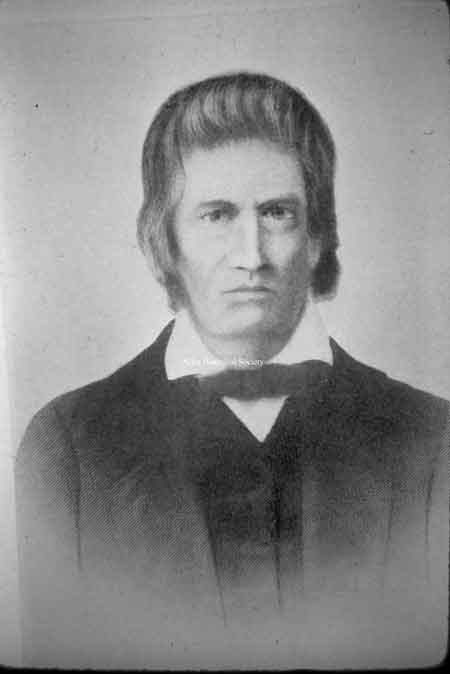
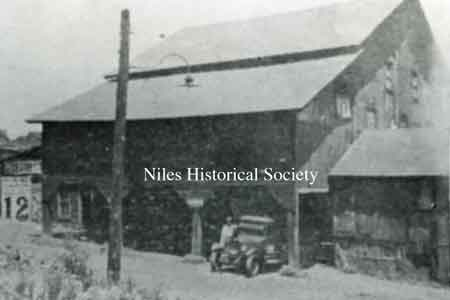
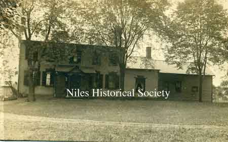

Ward-Thomas Museum


Famous Families in Early Niles: Ward, Heaton and Mason
Ward — Thomas
Museum
Home of the Niles Historical Society
503 Brown Street Niles, Ohio 44446
Click here to become a Niles Historical Society Member or to renew your membership
Click on any photograph to view a larger image, click on image again to zoom into photograph.
|   |
Famous
Families in Early Niles: In about 1806, James Heaton selected as his permanent settlement the vicinity near the junction of Mosquito Creek and the Mahoning River. He purchased the land along the creek for at least a mile and a half north of the river. He built his home, a saw mill and a grist mill. This was the first industry in what is now called Niles. The saw mill was abandoned, but the old grist mill, with its sturdy timbers was still in use in 1934 by Drake and McConnell. It was built of oak planks two feet wide and two and one half inch thick, and axe-hewn beams and pillars more than one foot square. The parts were fitted and held together with wooden nails, the old grist mill stood as a monument to the hard labor and capable workmanship of pioneer builders. After building his grist mill, James Heaton constructed in 1809 a blooming forge here, which manufactured the first bar iron in Ohio. The pig iron for this product, Heaton had obtained from the Yellow Creek furnace in Poland; but when war was declared in 1812 the furnace men enlisted or were drafted and the furnace closed. James Heaton immediately made plans to supply his own pig iron requirements and in so doing developed an industry that for many years was to attract settlers to the new community in Weathersfield Township. The Heaton forge is believed to have stood on the bank of the Mosquito Creek near the Baltimore and Ohio railroad bridge across the creek. In 1812 James Heaton borrowed $1,448 from his brother, John, and in 1813 completed the construction of a charcoal blast furnace capable of producing the pig iron need for the manufacture of bar iron and other products at the Heaton forge. He named his blast furnace “Maria Furnace” in honor of his daughter, Maria, believed to be the first white child born in Niles.
|
|
| |
||
|
The house was demolished in the early 1970s after several attempts to preserve it for historical reasons failed. SO1.439 |
In 1818 James Heaton built this house on the southwest corner of what is now Robbins Avenue and Cleveland Avenue. In 1834 he sold it to Ambrose
Mason and it became known as the Heaton-Mason Homestead,
being occupied by five successive generations of the Mason family.
It was an imposing white brick structure with wooden pegs that
held the timbers in place. Its cherry circular staircase and
numerous spacious rooms with fireplaces were features of the
landmark. |
 |
| |
||
|
James Heaton Family Tree Main Entrance to Ward Mansion |
William and Sarah Ward had eight children. They came to America in 1817 and went directly to Pittsburgh, Pa. William Ward was a practical iron worker and his sons obtained knowledge of the business from their association with him. Their son, James Ward married Eliza Dithridge in 1835. Her family was also involved with the iron manufacturing in Pittsburgh. In 1841 James Ward and his brother, William built the first rolling mill in Niles. The firm was destined to play a prominent part in the history of Niles, as well as the entire Mahoning valley. Just as the Heaton family founded the village of Niles, and the industries that nourished it, so the Ward family provided the industrial leadership that transformed Niles from a diminutive village of 300 inhabitants and a single furnace in 1840, to a thriving industrial town with a population of around 3,000 by 1870. The first Ward plant stood on the north bank of the Mahoning River, east of the viaduct. In 1859 James Ward built the Elizabeth Furnace to supply the pig iron for his rolling mill. It was located on the east side of the Mosquito Creek, about where East Park Avenue crosses the creek. In 1862 James and Elizabeth Ward built the house at 503 Brown Street. A lot of thought obviously went into the building of the house. The front entrance holds double doors with glass windows which open to allow the air to flow into the house and up the stairs which are in the main hallway. This allows for the cooling of the house in the summer. Of course this was before window screens as we know, so grates for the windows were installed to prevent birds from flying inside. These were probably made at the Ward factory and have the same motif as the frosted glass window above the double doors. We were told that the windows also held a frosted glass insert with the same motif, but they were removed some time ago. The frosted glass panels were made by Eliza’s brother, Edward Dithridge, who was a glass cutter and engraver in Pittsburgh. |
|
| |
||
James Ward |
James Ward, pioneer ironmaster of the Mahoning Valley, was born November 25, 1813 in Staffordshire, England. He came to America in 1817 and to Niles from Pittsburgh in 1841. He built puddling plants, founded James Ward & CO, The Falcon Nail and Iron Company and the Russia Mill for manufacturing steel. He was shot to death on July 24, 1864. A photo of William Ward, Sr. who was the brother of James Ward Sr., builder of the Ward-Thomas House and co-founder of the Ward Iron Mills. He was born in 1806 and died in 1888. |
William Ward, Sr. PO2.412 |
|
Josiah Robbins |
In 1826 a handsome and energetic young bachelor, Josiah Robbins, arrived in Niles from Youngstown and proceeded to establish himself in the business and social life of the community. Soon he married Maria Heaton, and in 1830, with his brother-in-law, Warren Heaton, took over management of the Maria Furnace, on James Heaton's retirement. When Warren Heaton died in 1842, the furnace was leased to William McKinley, Sr., Reep and Dempsey In 1836, Maria Heaton died and Josiah subsequently married Electa Mason, daughter of Ambrose Mason and joined with his father-in-law in the prosperous mercantile business. |
William McKinley, Sr. PO1.802 |
| |
||
H.H. Mason PO1.1105
Mason Block on State Street |
By 1834 the settlement had reached the proper proportions of a village so James Heaton planned the streets, marked off the lot division and named the village. Until 1834 the settlement was appropriately called “Heaton’s Furnace”, but James Heaton gave it a new name “Nilestown” in honor of Hezekiah Niles, editor of the Niles Register, a Baltimore paper, who’s Whig (early political party) principals Heaton greatly admired. Nilestown remained the name until 1843 when Ambrose Mason, Postmaster, for convenience shortened it to “Niles” and that is how Niles got its name.” Ambrose Mason led the line of Masons here in 1835. He started the first mercantile store with Josiah Robbins, who had married Mason’s daughter after the death of his first wife, Maria Heaton. Maria Heaton was the daughter of James Heaton, founder of Niles, who built the first iron furnace in 1809. Heaton prospered and built a stately home on the southwest corner of Robbins and Cleveland Avenues. Harry H. Mason, Ambrose's distinguished son, was born in New York in 1819. In 1842, he also opened a mercantile store, which served the Heatons, James Ward, William McKinley Sr. and others. He was assistant postmaster and succeeded his father as Postmaster. Harry Mason was elected as the first Mayor of the Village of Niles after it was incorporated in 1866. The mayor's salary was $100.00 per month at that time. The city building then was a tiny wooden structure on the land which would later become the McKinley Memorial grounds.
He was one of the builders of the Mason block at the southeast corner of Main and State streets (built prior to 1882). He became president of the City National Bank in 1893. |
|
|
Drawing from the 1874 Everts Atlas. |
Residence of H. H. Mason located on Vienna Avenue in Niles. Mason moved into this homestead in 1859. Mr. Mason was the first mayor elected after Niles was incorporated as a village in 1866. It was in this home that he held court. |
H.H. Mason residence (2019). |
|
|
||


{kind=link}
{kind=link}
{kind=link}
{kind=link}
{kind=link}
{kind=link}
{kind=link}
{kind=link}